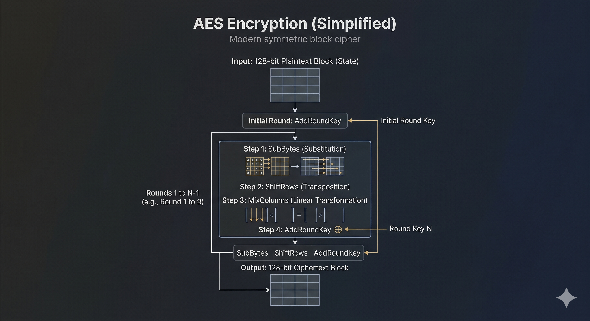

Modern Cryptography
Not just ciphers — an entirely different discipline
Every exhibit in this museum is a cipher — a reversible method for turning plaintext into ciphertext and back. Modern cryptography includes ciphers (AES, ChaCha20), but also key exchange protocols, digital signatures, and hash functions that are not ciphers at all. This page maps the journey from classical failure to modern practice.
Classical → Modern: What Each Failure Taught
| Classical Cipher Type | Fatal Weakness | Modern Solution | Modern Example |
|---|---|---|---|
| Caesar / Monoalphabetic | Frequency analysis — letter mapping preserved | Non-linear S-boxes destroy all frequency patterns | AES SubBytes |
| Homophonic Substitution | Still monoalphabetic — poor distribution leaks info | Uniformly random output: every ciphertext byte equally likely | AES with proper IV |
| Polyalphabetic / Vigenère | Repeating key creates detectable periodicity | Non-repeating pseudorandom keystreams, nonce + counter | ChaCha20, AES-GCM |
| Transposition (Rail Fence, Columnar) | Letters preserved — anagram attacks work | Substitution combined with permutation every round | AES ShiftRows + MixColumns |
| Playfair / Hill (block) | Small blocks leak digraph statistics; linear algebra solvable | 128-bit blocks, non-linear operations, round keys | AES (128-bit block) |
| Fractionation (Bifid, ADFGVX) | Coordinate mixing insufficient with static key square | Multiple rounds of mixing with key-derived round keys | AES 10–14 rounds |
| Military layered (ADFGVX, VIC) | Substitution + transposition — each layer still attackable | 10–14 rounds of 4 operations — computationally infeasible to reverse | AES, Camellia, SM4 |
| Rotor machines (Enigma, Lorenz) | Physical key distribution; operator errors; structural flaws | Public-key cryptography eliminates need for shared secret distribution | RSA, Diffie-Hellman, ECDH |
| One-Time Pad | Impractical key management — reuse is catastrophic | Computationally secure with short key; KDFs for key derivation | AES-256, X25519 key exchange |
Confusion & Diffusion
Making the relationship between key and ciphertext as complex as possible. Caesar has zero confusion: C = P + 3. One known pair reveals the entire key.
Modern solution: AES S-boxes are highly non-linear. Every output bit depends on every input bit in a way that can't be described by any simple mathematical relationship.
Spreading each plaintext bit's influence across many ciphertext bits. Caesar has zero diffusion: change one letter, change exactly one ciphertext letter.
Modern solution: AES avalanche effect — after 2 rounds, every output bit depends on every input bit. After 10 rounds, changing 1 bit changes ~50% of all output bits.
What Replaced Classical Cryptography
Taxonomy note: Only the first category below — symmetric ciphers — contains actual ciphers (reversible plaintext↔ciphertext transformations). Key exchange, public-key cryptography, and hash functions are cryptographic primitives, not ciphers. They solve different problems: establishing shared secrets, proving identity, and verifying integrity.
Looking for the exhibits? The five core modern primitives — DES, Diffie-Hellman, RSA, AES, and SHA-256 — each have a full four-part exhibit page in Hall XI · Modern Cryptography. This page provides the wider context: the journey from classical failure to modern practice, and the primitives (ChaCha20, ECDH, post-quantum) that sit alongside the canonical five.
128-bit blocks, 256-bit key, 14 rounds. 2²⁵⁶ possible keys with no known practical attack. Protects everything from HTTPS to full-disk encryption.

Designed by Daniel Bernstein. 256-bit key, 64-bit nonce. XORs plaintext with a cryptographically random, never-repeating keystream.
Quantum computers will break RSA and Diffie-Hellman. NIST standardised its replacements in 2024: ML-KEM (formerly CRYSTALS-Kyber, key encapsulation) and ML-DSA (formerly CRYSTALS-Dilithium, signatures), both resting on lattice problems believed to resist quantum attack. The mathematics is on exhibit in the Hall of Foundations: lattices & the SVP, the closest-vector problem, Learning With Errors — the algebra the standards are actually keyed on — and polynomial rings.
ECDSA (1992) proves authorship rather than hiding content: a private scalar on an elliptic curve, a public point, and a signature anyone can check. A 256-bit curve key matches a 3072-bit RSA key for strength. Its mathematics has never been broken; its implementations have, repeatedly, always at the one-time nonce. The group law is in the Hall of Foundations.
Shamir's Secret Sharing (1979) splits a secret among n holders so any k rebuild it and any k−1 learn nothing at all. Unlike everything else on this page its security is information-theoretic — not a hard problem but an undetermined one, and so immune to quantum attack. It underpins DNSSEC root key ceremonies and modern threshold signatures.
Zero-knowledge proofs (1985) convince a verifier a statement is true while revealing nothing beyond its truth. The succinct variants — zk-SNARKs and STARKs — validate private transactions and compress whole blocks of computation into a proof small enough to check on a blockchain. Every Schnorr and EdDSA signature is one, made non-interactive by hashing.
The museum's final lesson: Every classical cipher failed because it relied on obscurity or physical key distribution. Modern cryptography replaced both with mathematical hardness and public-key mathematics — and expanded far beyond ciphers into protocols, signatures, and proofs.
Resources
Free browser-based cryptography toolkit. Encrypt and decrypt with dozens of classical and modern ciphers. Visualize algorithms step by step.
Simon Singh’s The Code Book traces the history of cryptography from ancient Egypt to quantum computing. The definitive popular introduction to the field.
Dan Boneh’s free Coursera course covers modern cryptographic primitives: stream ciphers, block ciphers, MACs, public-key encryption, and key exchange.